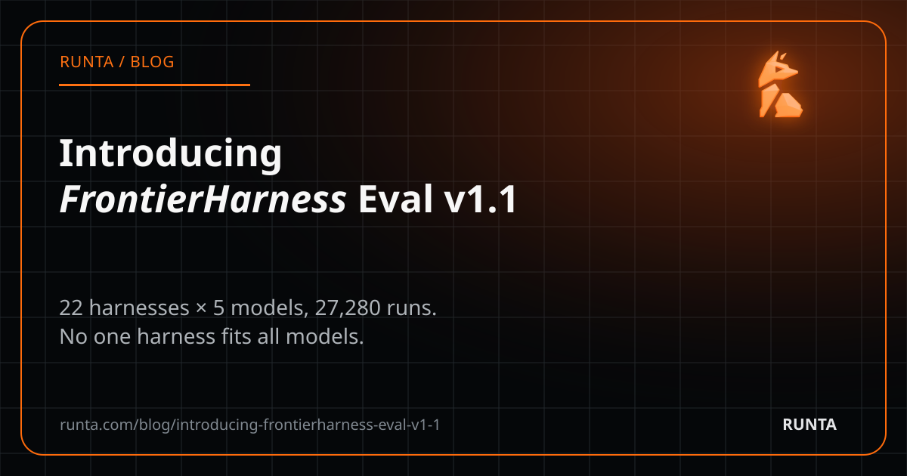
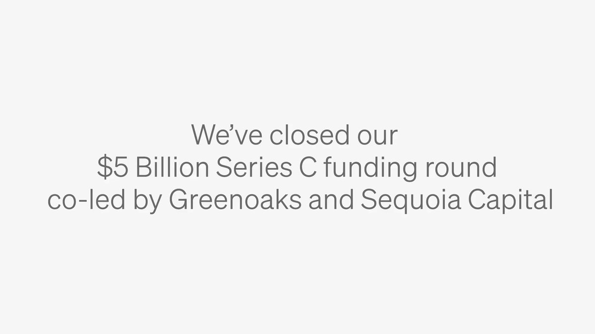
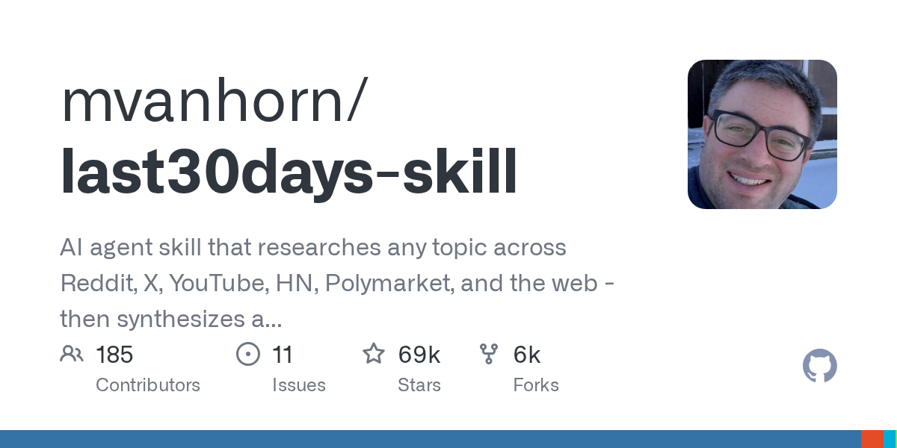
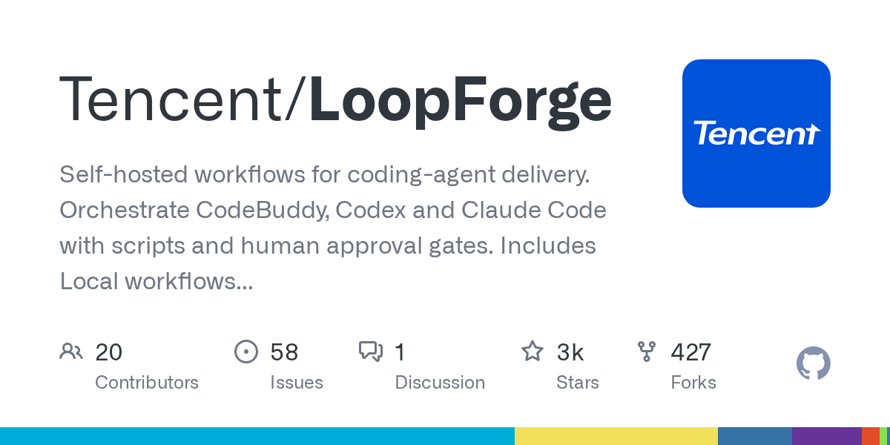
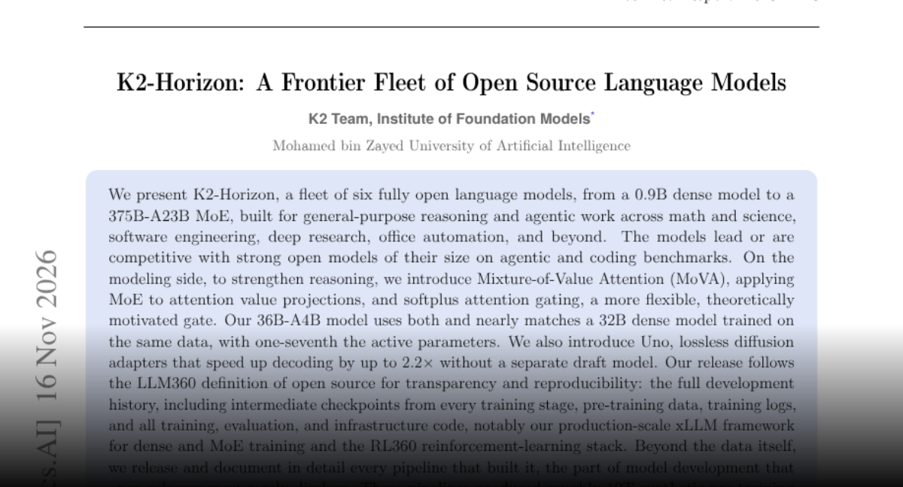
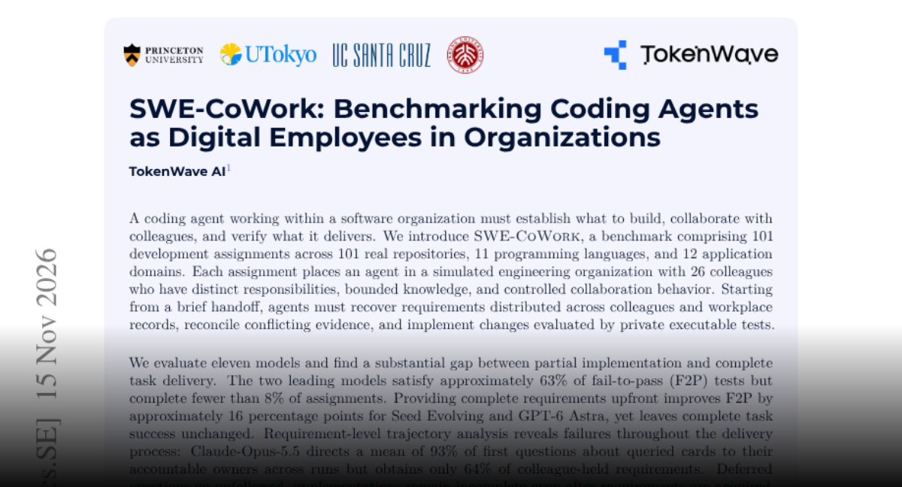
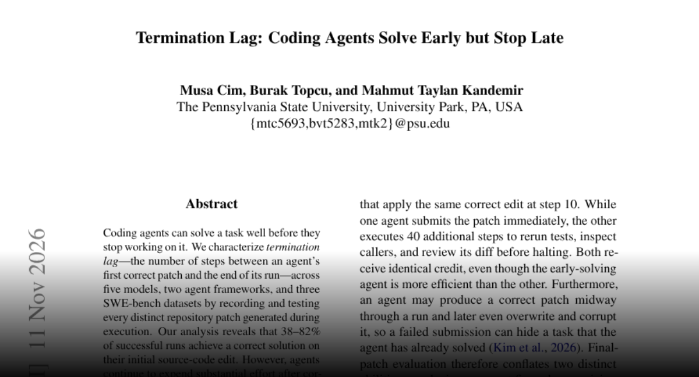
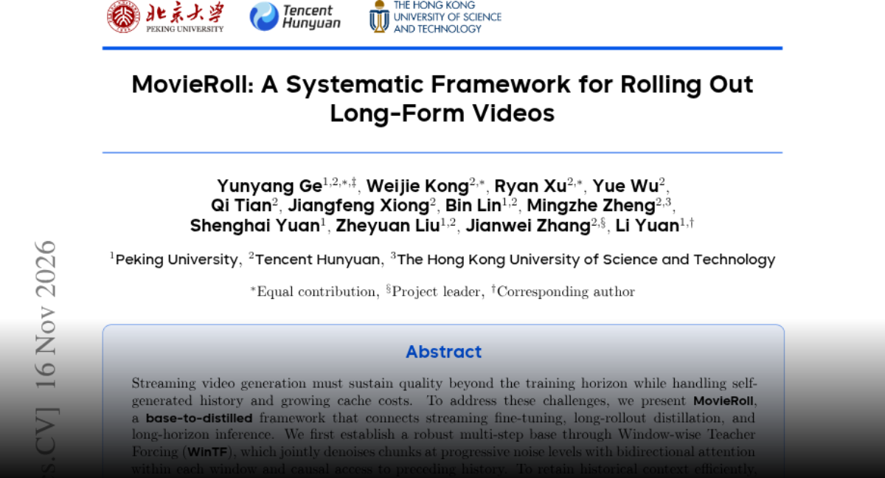
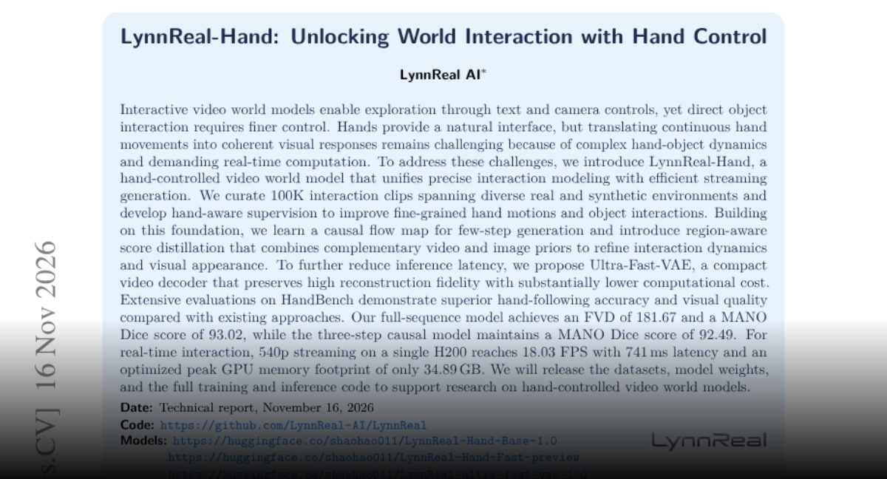
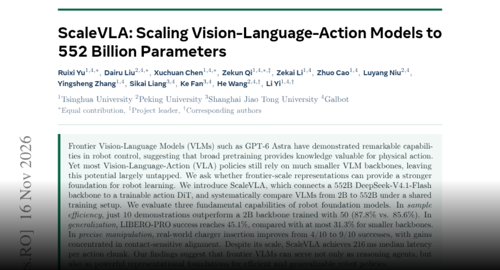

01
OpenAI 介绍与北约及盟国网络防御机构的合作
OpenAI 表示正与北约及盟国网络机构合作，帮助可信防御人员发现漏洞、测试修复并保护关键系统。重点不仅是发现问题，也包括验证补救措施。这表明 AI 正进入机构级安全工作流程，但公告本身并未证明攻击或故障数量已经下降。
每天一次，过滤 AI 噪音
OpenAI 表示正与北约及盟国网络机构合作，帮助可信防御人员发现漏洞、测试修复并保护关键系统。重点不仅是发现问题，也包括验证补救措施。这表明 AI 正进入机构级安全工作流程，但公告本身并未证明攻击或故障数量已经下降。
OpenAI 与智利政府宣布合作，重点包括负责任地采用 AI、培养公共部门技能，以及支持当地初创企业开发 AI 应用。合作将国家层面的推广与能力建设结合。当前公告阐述的是计划目标，并未提供已完成部署或经济效果的证据。
OpenAI 表示将扩展 ChatGPT for Academic Researchers，为全球二十万研究人员提供免费前沿模型访问。此举降低了研究团队尝试 AI 工具的门槛，但科研收益取决于学科需求及验证方法。当前描述未列出全部资格条件，也不能证明所有研究者都获得同等效率提升。
OpenAI 宣布新工具、实用指导与合作安排，旨在预防、识别及应对网络儿童性剥削和虐待。公告描述的是协同安全措施，并未量化伤害减少幅度。评估实际效果需要了解覆盖范围、误报漏报，以及有关保护机构如何处理确认的事件。
Mem 官方宣布将于 2027 年 1 月 15 日关闭，2026 年 12 月 18 日起笔记转为只读。收费已暂停，剩余服务期内保留原付费功能。用户应及时导出资料，并检查附件、集合及会议记录是否完整。这也是 AI 记忆产品的数据可迁移性问题。
《南华早报》报道百度与小米负责人警示 AI 热度与实际回报之间的差距，该消息在 Hacker News 引发较多讨论。当前可获取条目未提供完整引述或财务估算，因此不补充具体数字。它提醒企业在关注新模型之外，也要衡量 AI 支出能否产生实际业务价值。

Claude Code 团队介绍端到端、属性和差分测试，强调运行真实应用，并让评审规则独立于被检查的改动。文章称，独立评分器在部分内部结构化文件任务中最多提升十个百分点。团队还用历史缺陷和稳定改动评估评审器，核心是以可执行证据判断是否完成。

Runta 与 Baseten 在五个模型、62 个任务及四次尝试上评测 22 种框架配置，共计 27,280 次运行。报告称，按标价估算的推理成本中，64.5% 花在失败或超时任务上；最佳性价比框架随模型变化。结论受模型范围、供应商价格和任务选择限制。

Isomorphic Labs 高管 Max Jaderberg 宣布公司完成 C 轮融资，并表示内部模型能力正转化为潜在药物研发成果。他将生物学描述为可编程的科学。这是 AI 药物研发的重要产业消息，但融资和内部研究进展不等于已验证的临床疗效。
可灵官方账号在视觉展示帖中介绍 Kling Image 4.0，此前曾预告该模型即将到来。当前收集文本没有性能评测、价格或具体开放条件。它是生成式视觉工具的重要更新，但图像质量、编辑控制与实际可用性仍需完整文档及使用验证。

Nathan Lambert 认为，Qwen 4 Max 不开放权重并不意味着 Qwen 放弃开放模型。他将其解释为既有策略：最强模型通过 API 提供，其他模型继续开放权重。这是对发布策略的评论，而非新的许可公告；开发者应分别判断旗舰 API 与可自行部署模型的供应情况。

Thomas Wolf 介绍 PyBot 背后的实验：让 1,000 个代理一起运行，研究代理群能否在封闭实验室之外扩展。帖子强调透明研究，但未提供完整效果评估。多代理协同值得关注，不过代理数量增加本身不代表可靠性、成本或任务完成率一定改善。

Google 表示 Gemini Notebook 可将用户资料转成交互网站，包括仪表盘和可视化讲解。用户在聊天中提出建站需求，再于新标签页打开结果。这让基于资料的助手进一步生成可浏览成品，但公告并未量化事实准确性或复杂资料集下的可靠性。

Claude 开发者官方账号宣布，Claude Code 桌面版公测支持 iOS 模拟器中的 iPhone Duo。应用可在对话旁运行，Claude 能折叠或展开模拟设备以检查布局。这为编码代理验证界面提供了直接手段，但不代表全面覆盖所有设备或保证发现全部布局缺陷。

Google DeepMind 表示，研究人员正通过 Google Antigravity 使用 Gemini 4 Carbon 处理物理、数学和生命科学中的多步骤问题。该帖展示科学工作流应用，并未宣布具体的同行评审发现。当前信息不足以独立评估结果正确性、可复现性或效率提升幅度。

Sebastian Raschka 关注一种可能的预训练趋势：保持恒定学习率，并平均最近若干检查点或持续维护权重平均值。他指出 Kolibri 也采用类似思路。这可能增加训练计划的灵活性，但是否优于学习率衰减仍需跨模型和数据条件的受控实验。

Nathan Lambert 将政策风险与投资列为开放模型生态的两大压力，并以缺少黄仁勋支持的情境展开评论。他认为模型开发者可能需要更快找到盈利产品。该帖是分析，不应当作已核实的人事公告；它强调开放模型也依赖资金及政策支持。

热门仓库 last30days-skill 提供代理研究技能，覆盖 Reddit、X、YouTube、Hacker News、Polymarket 与网页，目标是综合生成有依据的总结。它适合关注多来源研究助手的开发者；仓库热度代表关注度，不能单独证明数据访问质量、事实准确性或冲突证据处理能力。

腾讯 LoopForge 提供自托管编码代理交付流程，支持协调 CodeBuddy、Codex 和 Claude Code，并结合脚本与人工审批关卡，也包含本地工作流。它关注代码生成之外的交付组织问题。生产可靠性、集成成本与安全属性仍需结合实际部署评估。

K2-Horizon 介绍六款开放语言模型，从 0.9B 稠密模型到总参数 375B、激活参数 23B 的混合专家模型。作者表示公开中间检查点、预训练数据、日志及训练基础设施，并报告扩散适配器最高带来 2.2 倍解码加速。完整开发资料是其可复现性价值的重要部分。

SWE-CoWork 在模拟组织中测试 101 项开发任务，需求分散在同事与记录中。领先模型通过约 63% 的相关测试，却完成不足 8% 的完整任务。直接提供完整需求也未提高整项成功率，暴露了从澄清、实现到验证和交接的持续跟踪问题。

研究覆盖五个模型、两个框架和三个 SWE-bench 数据集，衡量首次正确补丁之后代理仍继续工作的时长。成功运行中，38% 至 82% 首次源码编辑就已正确；后续大量步骤用于验证和探索，少数案例甚至破坏先前正确结果。重点是改善停止判断，同时保留有效验证。

SPILLWAY 利用只读工具返回的结构化字段及固定委托规则，确定代理行动目标是否允许，并将目标准入与可疑文本清理分开。作者报告在测试中的标准模板注入未成功重定向行动，学习型攻击者成功率也较低。结果限于测试范围，并非对所有提示注入的保证。

BitDecoding-FP4 同时处理四位 KV 缓存的准确性与吞吐问题，针对查询量化误差、概率下溢及键异常值设计方法，并配套优化注意力内核。作者报告，在 B300 上的两个 Qwen3 模型中，峰值吞吐达到 BF16 缓存的 2.4 至 3.0 倍。结论依赖具体硬件与负载。

MovieRoll 结合流式微调、长序列蒸馏和推理策略，试图在超出训练时长后维持视频质量。分层 KV 缓存压缩据称最高节省 78% 缓存内存，蒸馏模型在 HeliosBench 最长六十秒评测中表现突出。它同时处理误差累积和内存增长，具体结论仍以该评测为限。

LynnReal-Hand 通过手部动作控制视频世界，使用十万段真实与合成交互片段训练，并结合手部监督、少步生成和紧凑视频解码器。作者报告单张 H200 上可达到 540p、每秒 18.03 帧和 741 毫秒延迟。数据、权重及代码属于计划发布内容。

ScaleVLA 将 552B DeepSeek 骨干连接到可训练动作扩散 Transformer，并在统一设置下比较规模。作者报告 LIBERO-PRO 成功率为 45.1%，小规模真实充电器插入测试也有改善，每个动作块的中位延迟为 216 毫秒。真实试验数量有限，不能直接外推部署表现。